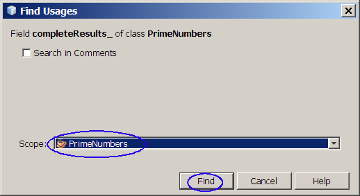
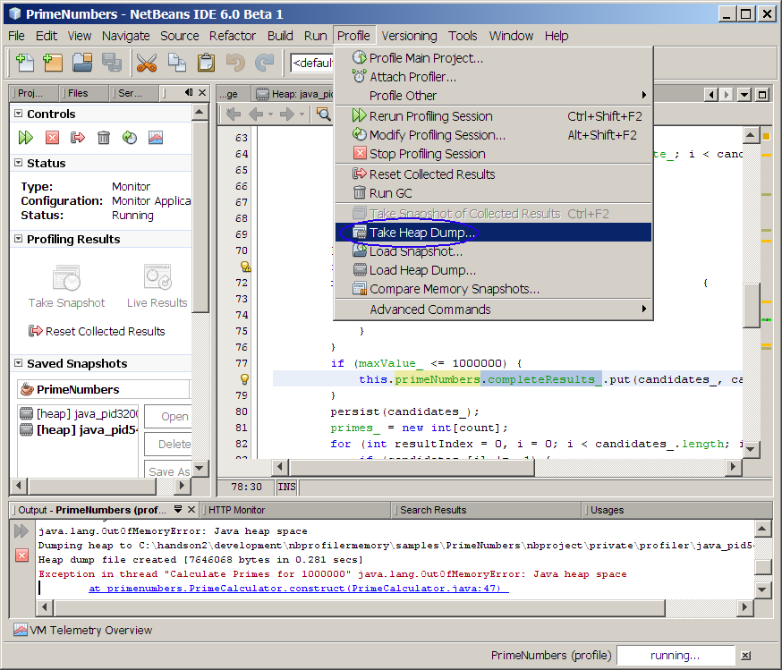

Finding Memory Leaks Using the NetBeans
Profiler
The NetBeans profiler has powerful capabilities to help you track down
memory leaks in Java applications. Using instrumentation, you see
allocations on
the heap happen as your program runs and the profiler provides
statistical values to highlight patterns in your application's memory
allocations. This
"behavioral"
approach can help you quickly identify the most likely memory leak
candidates, even in situations where each individual
leak is very small. The profiler also has a HeapWalker that can
be
used to examine the relationships between objects on the heap. This
"after
the fact" approach can help you quickly identify why a particular
object is not being garbage collected by the Java virtual machine. And
with its tight integration into the developer
work flow, the profiler makes it easy to
start/stop profiling sessions and more importantly, to go from profiler
results directly into the source code that has the problem.
In this hands-on lab, you are going to use the NetBeans profiler to
find out where exactly a memory leak is located, first in
a web application (Exercise 1) and then in a stand-alone application
(Exercise 2). The latter is based on a real-life story
where the NetBeans profiler was used to find a memory leak.
In Exercise 3, you are going to use the HeapWalker
feature of the profiler to analyze a heap. In Exercise 4, you
will learn how to attach the NetBeans profiler to an already-running
application.
Expected duration: 100 minutes
(excluding homework)
Software Needed
Before you begin, you need to install the following software on your
computer.
- Java Standard Development Kit (JDK™) version 6.0 (download)
- Select JDK 6 Update 2
from the download page
- The Dynamic attachment (Exercise 4)
require JDK 6.0.
- NetBeans IDE 6.0 (download)
- Download either "Web &
Java EE" or "All"
bundles.
- When you install NetBeans IDE, it will ask you which JDK
you want to use. Select JDK 6.0.
- 5116_nbprofilermemory.zip (download)
- The zip file contains this document and the lab contents
- Download it and unzip in a directory of your choice.
Operating Systems/platforms you can use
- Windows
- Solaris x86, Solaris Sparc
- Linux
Change Log
- Sep. 16th, 2007: Created
- Dec. 5th, 2007: Updated to reflect NetBeans IDE 6.0 final realease
Things to do (by Authors)
- Modify the memoryleak to use GlassFish (instead of Tomcat)
- HeapWalker exercise need to describe the reference better
- HeapWalker exercise to provide a step for fixing the problem
- JVM heapwalker generation at the command line should be described
Lab Exercises
Exercise 0: Perform JDK calibration
In this exercise, you will perform
calibration against the JDK running on your system. The
calibration is
required in order to perform profiling. It does not affect any of
behavior of your Java applications.
Note: Instrumenting the bytecode of the profiled application imposes
some overhead. To guarantee the high accuracy of profiling results,
NetBeans Profiler needs to collect calibration data in order to "factor
out" the time spent in code instrumentation. You need to run the
calibration process for each JDK you will use for profiling. The
calibration data for each JDK is saved in the
.nbprofile directory in your
home directory. You are prompted to run the
calibration the first time you invoke NetBeans Profiler. You are also
prompted if the calibration data for the local machine and JVM is
unavailable.
(0.1)
Run profiler calibration
1. Select Profile from
top-level menu and select Advanced
Commands->Run Profiler Calibration. (Figure-0.20 below)
Figure-0.20: Run Profiler Calibration
- Select JDK 1.6 (Default)
(Figure-0.21 below)
- Click OK.
Figure-0.21: Select Java Platform to calibrate
- Observe that the Information dialog
box indicating that the Calibration was successful.
- Click OK to close the
dialog box.
Figure-0.22: Information dialog box
Exercise 1: Build and run
"memoryleak" Web sample application in Memory Profiling mode
In this exercise, you are going to
profile the memoryleak sample
application that contains a badly designed
code fragment in which double and
float arrays are allocated in
a loop and
then saved as an entry into a HashMap, which would result in
OutOfMemoryError eventually. The goal of using the profiler is to find
out
where this code fragment is located.
(1.1)
Open "memoryleak" sample application
0. Start NetBeans IDE.
1. Open memoryleak
NetBeans project.
- Select File->Open Project (Ctrl+Shift+O). The Open Project dialog box appears.
- Browse down to <LAB_UNZIPPED_DIRECTORY>/nbprofilermemory/samples
directory.
- Windows: If you unzipped the 5116_nbprofilermemory.zip
file under
C:\handsonlabs
directory, the directory to which you want
to browse down should be C:\handsonlabs\nbprofilermemory\samples.
- Solaris/Linux: If you unzipped the 5116_nbprofilermemory.zip
file under $HOME/handsonlabs
directory, the directory to which you want
to browse down should be $HOME/handsonlabs/nbprofilermemory/samples.
- Select memoryleak.
- Click Open Project Folder.
- Observe that the memoryleak
project node appears under Projects tab
window.
2. Observe the memory leaking code
fragment. The goal of this exercise is to find this memory
leaking code using the NetBeans profiler.
- Expand memoryleak project
node.
- Expand Source
Packages->demo.memoryleak.
- Double-click LeakThread.java
to open it in the source editor window.
- Observe that two arrays, one with a single float and another with
a single double, are being
allocated in a loop and saved in a HashMap.
(Figure-1.11 below)
Figure-1.11: Code fragment that contains the memory leaking code
(1.2)
Run the project
in "profiling" mode
1. Make sure the memoryleak project
is the Main project. (The project node should be in
bold-font.) If it is not the Main project, right click the
project
and select Set as Main Project.
2. Select Profile from the
top-level menu and select Profile
Main Project. (Figure-1.20 below)
Figure-1.20: Profile Main Project
Trouble-shooting:
If
you see the following dialog box, it is because the JDK that is being
used by the NetBeans profiler has not been calibrated.
Solution: Perform the
calibration as described
above.
Figure-1.27: Calibration data missing dialog box
3. If the project is being profiled for the first time, you may
encounter this
dialog box. Click
OK.
(Figure-1.21 below) If you have profiled the project previously,
you will not see this dialog box.
Figure-1.21: Permission to Profile
4. Configure Analyze Memory options.
- Select Memory on the
left.
- Select Record both object
creation and garbage collection.
- Select Record stack trace for
allocations.
- Make sure the Use defined
Profiling Points option is not selected.
- Click the Run button.
(Figure-1.22 below)

Figure-1.22: Analyze Memory options
5. Trigger the memory-leaking.
- Observe that the browser gets displayed.
- Click the Start Leaking
button. This will trigger the memory
leaking code to get executed. (Figure-1.23 below )
Figure-1.23: Run the browser
6. Display the live profiling result.
- Click Live Results
button on the left.
- Observe that the Live Profiling
Results window gets displayed on
the right side of the IDE.
- Click the Generations
column
in the Live Results window to display the results in sorted
order. (Figure-1.24 below)
Figure-1.24: Profiling result
The columns of the live results provide object allocation and memory
usage information.
- The Allocated Objects (third column from the right) is the
number of objects that the profiler is monitoring. In the example shown
in Figure-1.24 above, there are 11,727 instances of char[]
that are
being monitored. By default this number will be approximately
ten percent of the objects actually allocated by your application. By
monitoring only a subset of the created objects the profiler is able to
dramatically reduce the overhead it places on the JVM, which then
allows your application to run at close to full speed.
- The Live Objects is the number of the Allocated Objects
that are still on the JVM's heap and are therefore taking up memory.
- The two Live Bytes columns show the amount of heap memory
being used by the Live Objects. One column displays a graph, the other
displays text.
- The Avg. Age value is calculated using the Live Objects.
The age of each object is the number of garbage collections that it has
survived. The sum of the ages divided by the number of Live Objects is
the Avg. Age.
- The Generations value is calculated using the Live
Objects. As with Avg. Age, the age of an object is the number of
garbage collections it has survived. The Generations value is the
number of different ages for the Live Objects.
7. Detect which object types are not being garbarge-collected.
- As the program continues to run, the profiler will
update the display. Keep your eye on the entries for float[]
and double[]. Notice how their Generation values
continue to
increase. As a result, float[] and double[]
continue to move higher in the list. Eventually they will be displayed
at the top of the list, right under java.util.HashMap$Entry,
which also has an increasing value for generations. As the application
continues to run the generations value continues to increase for java.util.HashMap$Entry,
float[], and double[], but not for any of the
other classes
- Right click double[] and
select Take Snapshot and Show
Allocation Stack Traces. (Figure-1.26 below)
Figure-1.26: Take the Snapshot
8. Find the location of the code fragment that leaks memory.
- Observe that methods in which the double primitive is allocated is
displayed. In this example, there is only one.
- Double click
demo.memoryleak.LeakThread.run(). This will display the
code.
- Observe that the run()
method of the LeakThread.java,
which contains the code fragment that causes the memory leak is now
displayed in the source editor. (Figure-1.27 below) So, congratulations! you found the
memory leaking code.
Figure-1.27: Code is found
9. Stop profiling.
- End the profiling session by choosing Profile > Stop
or click the
 button.
button.
Summary
In this exercise, you learned how to use
the profiler to monitor the memory usage of your application. You
learned how to interpret the data collected, especially Generation,
which can be used to find out which objects are not being
garbage-collected.
return to the top
Exercise 2: Build and run
"HttpUnit" Java SE sample application in Memory profiling mode
This exercise is based on an actual usage
of the NetBeans profiler
as part of the development and testing of a production
application.
Andrés González of Spain used the NetBeans profiler to track down a
memory leak in HttpUnit. HttpUnit is an open source project that
provides a framework for unit testing of web pages. It essentially acts
as a web browser so that you can write unit tests to verify that the
correct pages are being sent back from your web application.
Andrés was using HttpUnit to run
multi-day tests of his application. He discovered something sort of odd
- the
JVM that was running the tests he created with HttpUnit would
eventually report an OutOfMemoryError. The tests had to run for long
period of time before the OutOfMemoryError would occur though, so
apparently each memory leak was relatively small.
Andrés used the NetBeans profiler to
track down the problem and he wrote a blog
entry about it (the entry is in Spanish, but Google can translate).
There is also this
thread out on the HttpUnit mailing lists where he reported what he
found.
The HttpUnit
sample application included here is not the program that Andrés
wrote - it does, however, encounter the same problem in HttpUnit that
Andrés has used. The
underlying issue has to do with the way that HttpUnit processes web
pages that include JavaScript. The framework does have support for a
subset of JavaScript, but not the entire language. If it encounters
JavaScript that it does not understand it will throw an exception. If
the web page you are attempting to test includes JavaScript that
HttpUnit does not support and you do not want to wade through all those
exceptions in the output then the HttpUnit documentation recommends
that your test program call HttpUnitOptions.setExceptionsThrownOnScriptError(
false );.
The side effect, however, is that
HttpUnit will store every exception thrown during its JavaScript
processing in an ArrayList and
it never
removes them. So if your tests access enough web pages that either have
JavaScript errors or that include JavaScript that HttpUnit does not
support, you can eventually get an OutOfMemoryError.
One additional note on the sample
application - it does not require
a web server in order to run. HttpUnit has a nice feature where if what
you want to test is the response from a servlet then it can host the
servlet for you, in the same JVM as your test application. So the
sample application consists of:
- a servlet that returns JavaScript that has an error
- a main() method that
repeatedly requests a page from that servlet.
(2.1)
Open "HttpUnit" sample application
Before you start this exercise, it is
highly recommended for you to read the above and have a good
understanding of
the context.
1. Open HttpUnit
NetBeans project.
- Select File->Open Project (Ctrl+Shift+O). The Open Project dialog box appears.
- Browse down to <LAB_UNZIPPED_DIRECTORY>/nbprofilermemory/samples
directory.
- Select HttpUnit.
- Click Open Project Folder.
- Observe that the HttpUnit
project node appears under Projects tab
window.
(2.2)
Run the application
in "profiling" mode
1. Make sure the
HttpUnit project
is the Main project. (The project
node should be in bold-font.) If it is not the Main project,
right
click
the project and select
Set as Main
Project.
2. Select
Profile from the
top-level menu and select
Profile
Main Project.
- If the project is being profiled for the first time, you may
encounter this
dialog box. Click OK.
(Figure-2.19 below) If you have profiled the project previously,
you will not see this dialog box.
Figure-2.19: Permission to Profile
3. Configure Analyze Memory options and run profiling.
- Select Memory on the
left.
- Select Record both object
creation and garbage collection.
- Select Record stack trace for
allocations.
- Make sure the Use defined Profiling Points is not selected.
- Click Run button.
(Figure-2.20 below)
Figure-2.20: Configure Analyze Memory options
- Observe that the application begins running in the Output window
of the IDE. (Figure-2.21
below) This is a simple test application that emulates the
behavior that
Andrés saw. It uses HttpUnit to process the HTML that is returned by a
servlet. Requests are being repeatedly sent to that servlet by the test.
(2.3)
Display and analyze the collected data
1. Display Telemetry Overview.
- Click Telemetry Overview
icon. (Figure-2.21 below)
Figure-2.21: Application is running
- Observe that the Telemetry
Overview window gets displayed.
(Figure-2.22 below)

Figure-2.22: VM Telemetry Overview
In the graph on the left, the red shading indicates the allocated
size of the JVM heap. The purple overlay indicates the amount of heap
space actually in use. In the example above, the allocated heap size at
the last update was about 5 megabytes. Of that, a little over 2
megabytes is actually being used to hold Java objects.
The graph on the right shows the count of active threads in the JVM.
The graph in the center shows two important heap statistics.
- The blue line is the percentage of execution time spent by the
JVM doing garbage collection and is graphed against the y-axis on the
right edge of the graph. Time spent by the JVM doing garbage collection
is time that is not available for it to run your application. So if the
blue line indicates a large percentage you may want to consider tuning
the JVM by configuring a larger heap size (refer to the -Xmx parameter documentation)
or perhaps switching to a different garbage collection algorithm.
- The red line is surviving generations and is graphed against the
y-axis
scale on the left edge of the graph. The count of surviving generations
is the number of different ages of all the Java objects on the JVM's
heap, where "age" is defined as the number of garbage collections that
an object has survived. When the value for surviving generations is
low,
it indicates that most of the objects on the heap have been around
about the same amount of time. If, however, the value for surviving
generations is increasing at a high rate over time, then it indicates
your application is allocating new objects while maintaining references
to many of the older objects it already allocated. If those older
objects are in fact no longer needed then your application is wasting
(or "leaking") memory.
2. Display live profiling result.
- Click Live Results icon
in the profile window.
- Observe that the Live Profiling
Results window shows activity on the heap. The column on the
left contains class names. For each class you can see information about
the number of objects created, the number that are still in use (live),
and a particularly interesting statistic called Generations.
- Click the Generations column
to sort the display by Generations.
This will sort it in descending order. (Figure-2.23 below)
Figure-2.23: Live Profiling Results
Trouble-shooting: If you don't
see the live results data as shown in Figure-1.25 below, it is due to a
known-bug of NetBeans profiler, which has been fixed in the daily build
but not in Beta1 unfortunately
as described
here.
Workaround: Stop the
profiling by clicking Stop button
and redo the profiling again taking the steps of
2.2;
this time select the Use defined
Profiling Points option. The Take Snapshot option always works.
3. Detect which object types are not being garbarge-collected.
- Observe that the two of the classes have huge values for
Generation, in comparison to all the other classes: String and char[]
array. (Figure-2.25 below)
More importantly, the Generations
value for both of them
continues to increase as the application runs. Note that, for the rest
of
the classes, this is not the case - they have stabilized.
Note: The generation count for a class is easy to understand. All you
have to
understand is that each object has an age. The age of an object is
simply the number of the Java virtual machine's garbage collections it
has survived. So if, for example, an object is created at the beginning
of an application and the garbage collector has run 466 times then the
age of that object at that point in time is 466. To calculate the
Generation value for a class, just count up the number of different
ages across all of its objects that are currently on the heap.
That count of different ages is the number of generations.
- Right-click java.lang.String
and select Take Snapshot and Show Allocation Stack Traces.
This will take the snapshot of the java.lang.String objects and display
more detailed information.
Figure-2.25: Take Snapshot and Show Allocation Stack Traces
4. Stop the profiling
- Click Stop button to stop the profiling (since we
got the
profiling data). (Figure-2.26 below)
Figure-2.26: Stop the profiling
5. Analyze the profiled data.
Note: The displayed view shows all the places in the application
where
Strings were allocated. In a typical Java application, there can be
dozens or even hundreds or thousands of places where Strings are
allocated. What you want to know is: which of those allocations are
resulting in memory leaks? You can use the generation count as a key
indicator. Notice that only one of the allocation locations in this
group has created Strings that have a large value for Generation count:
java.lang.StringBuffer.toString()
- it has the value of 20 in the Figure-2.28 below. If we were to
continue
running the application and take more snapshots we would see larger
values each time.
Now that you know that StringBuffer's
toString()
method is allocating Strings
that
appear to be candidate memory leaks, you need to determine how that
relates to our application's usage of HttpUnit.
- Double-click Memory:
<time> tab window to display it in maximized window.
(You can click it again to minimize it.)
- Expand java.lang.StringBuffer.toString()
(Figure-2.28 below) This will display all the places where StringBuffer.toString() method is invoked.
- Observe that the only strings allocated in StringBuffer.toString()
with a large value for generation count are the Strings that resulted
from calls to StringBuffer.toString()
by a call from the
HttpUnit code: com.meterware.httpunit.javascript.JavaScript$JavaScriptEngine.handleScriptException().
Figure-2.28: Expand the suspicious code
- Expand com.meterware.httpunit.javascript.JavaScript$JavaScriptEngine.handleScriptException().
- Observe that the profiler goes ahead and expands the
entire stack trace. You will see a straight-line back to the main() method since there
is only
one way it is being called (in this example).
- Right click Main.main(String[])
and select Go To Source.
(Figure-2.29 below)
Figure-2.29: Display the source of the main() method
- Observe the code fragment that calls HttpUnit's getResponse()
method on line 46 in Figure-2.30 below, which ends up making the call
that results in memory leak.
Figure-2.30: Sample application's call to the code that has a memory
leak
6. Take a look at the memory-leaking code.
- Right click com.meterware.httpunit.javascript.JavaScript$JavaScriptEngine.handleScriptException(Exception,String)
and select Go To Source.
Figure-2.31: See the source code that
- Observe the code that actually has the memory leak: it adds
Strings to an ArrayList and they never get removed. (Figure-2.32
below)
Figure-2.32: Memory leaking code
(2.4)
Correct the
problem
In this step, you are going to correct the problem - actually removing
the offending code for the sake of the simplicity of the exercise.
1. Comment out the offending code in the
com.meterware.httpunit.javascript.JavaScript$JavaScriptEngine.handleScriptException()
method.
private void handleScriptException( Exception e, String badScript ) {
final String errorMessage = badScript + " failed: " + e;
if
(!(e instanceof EcmaError) && !(e instanceof
EvaluatorException)) {
e.printStackTrace();
throw new RuntimeException( errorMessage );
}
else if (isThrowExceptionsOnError()) {
e.printStackTrace();
throw new ScriptException( errorMessage );
}
else {
// _errorMessages.add( errorMessage
); // Commented out
}
}
|
Code-2.33: Remove the offending code
2. Rerun the application in the profiling mode.
3. Observe that the Generation number of the String class remains in
the range of 10 to 12. (Figure-2.34 below) This indicates
that the memory leaking problem has been resolved.
Figure-2.34: String objects are garbage collected.
Summary
In this exercise, you have used NetBeans
profiler to find the memory leaking code in the production application
- HttpUnit code. By
the way, the HttpUnit provides a method that will clear the ArrayList
in which these Strings are being collected.
return to
the top
Exercise 3: Use "HeapWalker" to
analyze memory problem
The HeapWalker provides a complete
picture of the objects on the heap and the references between
the objects.
The HeapWalker is especially useful for analyzing binary heap dump
files produced when an OutOfMemoryError occurs.
The
Find Nearest GC Root
feature can help you track down
memory leaks by showing the owner of the reference that prevents an
object from
being garbage collected.
- Open "PrimeNumber" project
- Run "PrimeNumber" project in "profiling" mode
- Use HeapWalker to analyze the problem
(3.1)
Open
"PrimeNumber" project
1. Open PrimeNumber
NetBeans project.
- Select File->Open Project (Ctrl+Shift+O). The Open Project dialog box appears.
- Browse down to <LAB_UNZIPPED_DIRECTORY>/nbprofilermemory/samples
directory.
- Select PrimeNumber.
- Click Open Project Folder.
The PrimeNumber
project node appears under Projects tab
window.
2. Observe that the maximum heap size is set to 6M bytes. This is
to use smaller heap space than the default (in order to generate the
problem fast.)
- Right click the PrimeNumber
project and select Properties.
- Select Run.
- Observe that the VM Options
field is set to -Xmx6m.
(Figure-3.10
below)
- Click OK to close it.
Figure-3.10: Maximum heap size
(3.2)
Run
"PrimeNumber" project in profiling mode
1. Make sure the
PrimeNumber project
is the Main project. (The project node should be in
bold-font.) If it
is not the Main project, right click the project and select Set as Main
Project.
2. Select
Profile from the
top-level menu and select
Profile
Main Project.
3. Configure profiling mode.
- Select Monitor on the
left.
- Click Run button.
(Figure-3.20 below)
Figure-3.20: Monitor application
4. Run the application.
- For the Enter a Number
field, type 1000000.
- Click Calculate Prime Numbers
button. (Figure-3.21 below) It will calculate the largest
prime number less than or equal to the number that was entered, 1000000
in this example.
Figure-3.21: Calculate Prime Number under 1000000
- Observe that the result displays 999983.
(Figure-3.22 below)
Figure-3.22: Result
5. Generate OutOfMemoryError condition.
- Click the Calculate Prime
Numbers button again.
- Wait until
you see a dialog box of Figure-3.23
below. (It might take a couple of minutes) The dialog box
indicates that an OutOfMemoryError was
thrown so the profiler requested a standard
binary heap dump snapshot from the JVM.
- Click Yes.
Figure-3.23: Question
- Observe also that, in the Output
window of the IDE, the application displays an java.lang.OutOfMemoryError: Java heap
space. (Figure-3.24 below). We are now ready to use
the HeapWalker to analyze the memory usage when this error occurred.
Figure-3.24: java.lang.OutOfMemoryError: Java heap space
(3.3)
Use HeapWalker to
analyze the problem
1. Use the HeapWalker.
- Observe that the heapwalker opens up with a Summary view. You can see the
summary view of the heap usage: size, operating system, and the JVM
system properties. (Figure-3.30 below)
Figure-3.30: Summary view of the HeapWalker
- Click the Classes view
button and then click the Size column
to sort by size. (Figure-3.31 below) This is a list of all
the classes that are on the heap, along with the
number of object instances of each class and the total size occupied by
those
object instances.
Figure-3.31: Classes view
- Observe that the most of the heap is taken up by int[] arrays. You are going
to take a look at the object instances for int[] array.
- Right click the int[] array
and choose Show in Instances
View. (Figure-3.32 below)
- Observe that there are 1896 int[] arrays on the heap (in the
example picture below), whose total size amounts to 4414336 bytes. (The
numbers of your system will be somewhat different from these numbers.)
Figure-3.32: Show in Instances View of int[] array
- Click on the first int[]
array instance that has the size of 4000012 bytes.
- Now that you have selected an instance, you can see two things
over on the right: its fields and a list of any objects that reference
this particular instance. (Figure-3.33 below)
Figure-3.33: Display information on int[] instance that holds large
memory
- Expand the <items 0-499> entry. (Figure-3.35 below)
Since this is an array, the
list of Field column is actually a list of array indexes, in groups of
500. The Type and Value columns display the type and the value of
entries in the array.
Figure-3.35: View the values of the <items 0-499>
- Scroll down the items.
- Observe that this array holds all the prime numbers less than the
requested value, with place holder entries, each of which has value of -1, for integers that are not
prime. (Figure-3.36 below)
Figure-3.36: Observe the int[] array contains the prime numbers
We have found something on the heap that should not be there - in this
case, this appears to be an array that was used during the calculation
that should have been garbage collected after the calculation. So why
didn't the JVM's garbage collector remove it? There must be some
accidental reference to it that is being made (and that should be
cleared). This is where the References information comes in handy.
- Right click this in the
References panel and
click Show nearest GC Root.
(Figure-3.37 below) [Note: Garbage Collection (GC) roots are the
objects that never get removed from the heap - they are the starting
point for the JVM's garbage collector. Any object that is reachable
from a GC root cannot be removed from the heap.]
Figure-3.37: Show Nearest GC Root
- Observe that the display expands so that the entry for primeNumbers is shown. [Note:
There are actually several GC roots in this case, but what is often
more interesting is what we can learn by looking at the object
references along the way, since if they were to let go of their
reference this array would be eligible for removal by the garbage
collector. Notice this variable called completeResults_.]
- Right click completeResults_
and choose Go To Source.
(Figure-3.39 below) [Note: An advantage of an integrated tool -
easy access to the source code.]
Figure-3.39: Go To Source
- Observe that PrimeNumbers.java file opens up in the Source editor
window.
- Observe that the completeResults_
variable is on line 31. It is a Map object.
- Right-click it and select Find
Usages. (Figure-3.40 below)
Figure-3.40: Find Usage of the completeResults_
- Observe that the Find Usage dialog box appears.
- Set the Scope to PrimeNumbers.
- Click Find.
(Figure-3.41 below)

Figure-3.41: Find Usage
- Observe that the Usages window opens with the results
- Double-click the only result. (Figure-3.42 below)
Figure-3.42: Result of the Find
- Observe that the complete list of candidate prime numbers is
being put into this Map. (Figure-3.43 below) But as we can see
from the Usages results it is never removed. So we don't need the array
anymore, but it cannot be garbage collected - that is a memory leak.
And one easily found with the profiler's heapwalker.
Figure-3.43: Code fragment
(3.4)
Take and load
Heap Dump
One last thing to note - the profiler's heapwalker can also be used on
any binary heap dump file produced by one of Sun's JVMs. There are a
variety of ways to get a JVM to produce a heap dump; as an example,
there is a command line flag that you can use to have the JVM create
the file whenever an OutOfMemoryError is thrown. You can then open that
file with this feature.
You can also create a Heap Dump from the IDE.
1. Create a Heap Dump.
- Select Profile from
top-level menu and select Take Heap
Dump. (Figure-3.46 below) This will save the heap dump as
a file.

Figure-3.46: Take Heap Dump
- Select Custom Directory.
- Create a new directory, for example, c:\mydump, in this example.
- Specify the directory into which you are going to create Heap
Dump file.
- Click OK. (Figure-3.47 below)
Figure-3.47: Specify the directory
- Click No for now. (This is to simulate a situation in which
you are reading a Heap Dump file created previously.)
Figure-3.48: Heap Dump Saved.
2. Load the Heap Dump file.
- Select Profile from
the top-level menu and select Load
Heap Dump. (Figure-3.49 below)
Figure-3.49: Load Heap Dump
- Observe that the loaded heap dump is displayed. (Figure-3.50
below)
Figure-3.50: Loaded heap dump
Summary
In this exercise, you have learned
how to use the HeapWalker of the NetBeans profiler to analyze a memory
usage
problem, specifically to find a reference to an object that prevents it
from being
garbage collected.
return to
the top
Exercise 4: Perform memory usage analysis
on locally running applications
With JDK 6 you can attach the profiler
to an application that is already running. No special JVM command line
flags are necessary when you start that application.
Dynamic attach works even if you do not have a NetBeans project defined
for the application.
Please note that Dynamic attach
only works if the application
being profiled is running on JDK6
and the NetBeans IDE itself
is running on JDK6.
JDK5 does not support dynamic attach.
- Ceate AnagramGame project
- Attach profiler to locally running (but external
to NetBeans IDE) Java application
(4.1)
Create
AnagramGame project
1. Create a new NetBeans project.
- Select File->New Project. (Figure-4.10 below)
Figure-4.10: Create a new project
- Expand Samples under Categories and select Java.
- Select Anagram Game under Projects. (Figure-4.11 below)
Figure-4.11: Select Anagram Game sample application
- Select Finish (Figure-4.12 below)
Figure-4.12: Finish creating the project
2. Make sure the project is using JDK 6.
- Right click the AnagramGame project
node and select Properties.
- Select Sources and make
sure the Source Level is set
to 1.6. (Figure-4.13
below)
- Click OK.
Figure-4.13: Make sure you are using JDK 6.
3. Build the project.
- Right click the AnagramGame project
and select Clean and Build Project.
- Note that you can run the program at the command line by
typing java -jar
"C:\myprojects\AnagramGame\dist\anagrams.jar". (You will
run the application this way later to simulate a locally running Java
application.)
Figure-4.14: Take the command line
- Right click project node and select Close.

Figure-4.15: Command line
4. Run the program external to the
NetBeans IDE.
- Open a terminal window and type java
-jar "C:\myprojects\AnagramGame\dist\anagrams.jar".
If you are running on FAT32 system on Windows, open a terminal window,
and type
java
-XX:+PerfBypassFileSystemCheck -jar
"C:\myprojects\AnagramGame\dist\anagrams.jar".
Figure-4.16: Run the programming outside of the IDE
- Observe that the Anagrams dialog box appears.
- Type in abstraction and click Guess.
Figure-4.17: Anagram program
(4.2)
Attach NetBeans
profiler to the locally running (but externally from NetBeans IDE)
application
1. Select Profile->Attach Profiler.
(Figure-4.20 below)
Figure-4.20: Attach profiler
2. Configure Memory Analyzer options.
- Make sure <External
Application> is chosen for the Attach
to: field.
- Select Memory on the
left.
- Select Record both object
creation and garbage collection.
- Select Record stack trace for
allocations.
- Select Attach.
Figure-4.21: Attach Profiler
3. Configure Attach options.
- Select Local under Attach method.
- Select Dynamic (JDK 1.6)
under Attach invocation.
Figure-4.23: Select Target Type
- Observe that the Review Attach Settings dialog box appears.
- Click Next.
Figure-4.24: Review Attach Settings
Figure-4.25: Manual Integration
4. Select the target process to monitor.
- In the Select Process
dialog box, select AnagramGames process.
- Click OK. (Figure-4.26 below)
Figure-4.26: Select the target process
Trouble-shooting: If you
experience <Error Getting Running Processes> as shown below, it
is highly likely because you are running the AnagramGame application on
a Windows system that has FAT32
file system. This symptom is explained in the "
hsperfdata
is not being created on non-NTFS partitions".
Workaround: When
run the AnagramGame application in a terminal window, type
java -XX:+PerfBypassFileSystemCheck -jar
"C:\myprojects\AnagramGame\dist\anagrams.jar" not
java -jar
"C:\myprojects\AnagramGame\dist\anagrams.jar".
Figure-4.27: Process is not being shown
5. Analyze the process.
- Click Live Results icon.
- Observe that the live result is being displayed.
Figure-4.26: Display live results
Trouble-shooting: If the
live result is not being shown, stop the profiling and try it again.
Summary
In this exercise, you have learned
how to dynamically attach the NetBeans profiler to a locally running
application.
return to
the top
Homework
Exercise (for people
who
are taking Sang Shin's "Java SE Programming online course")
<to
be provided>